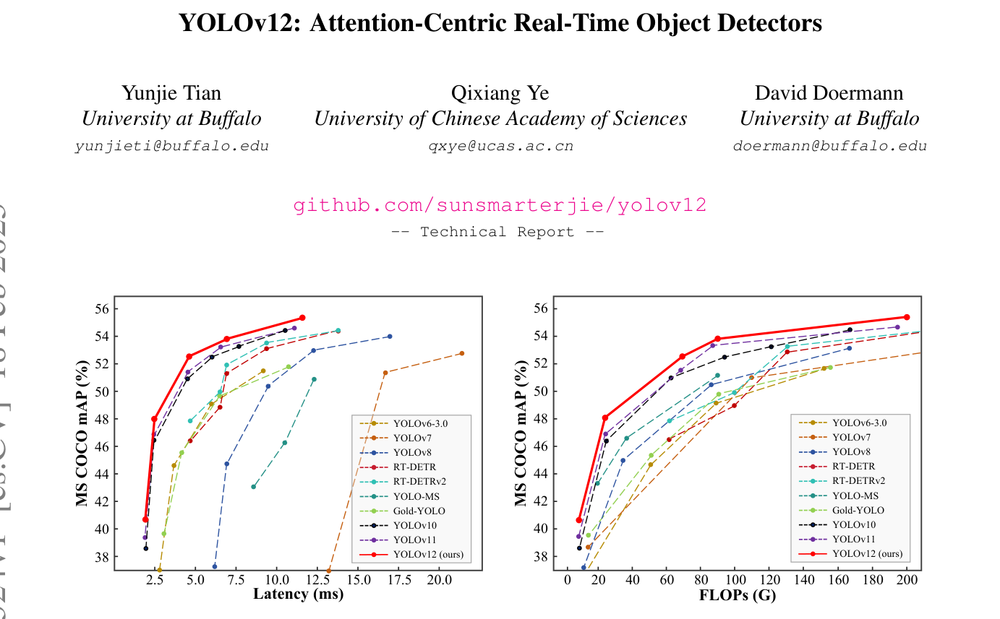
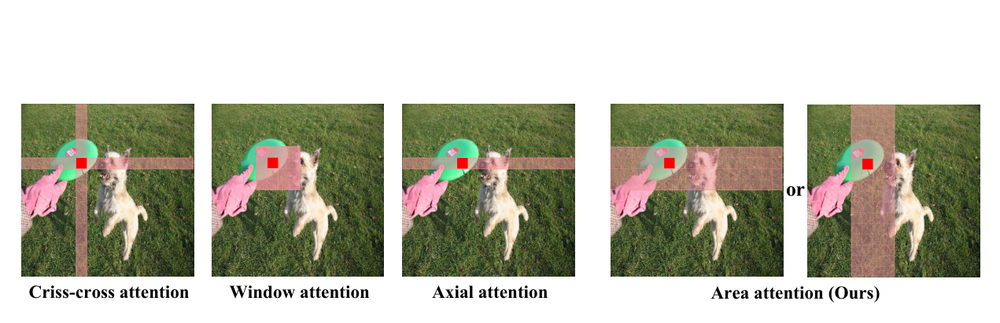
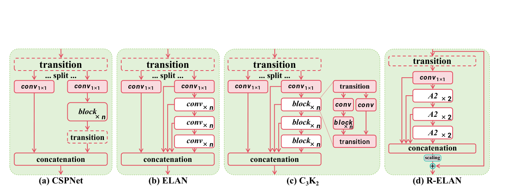
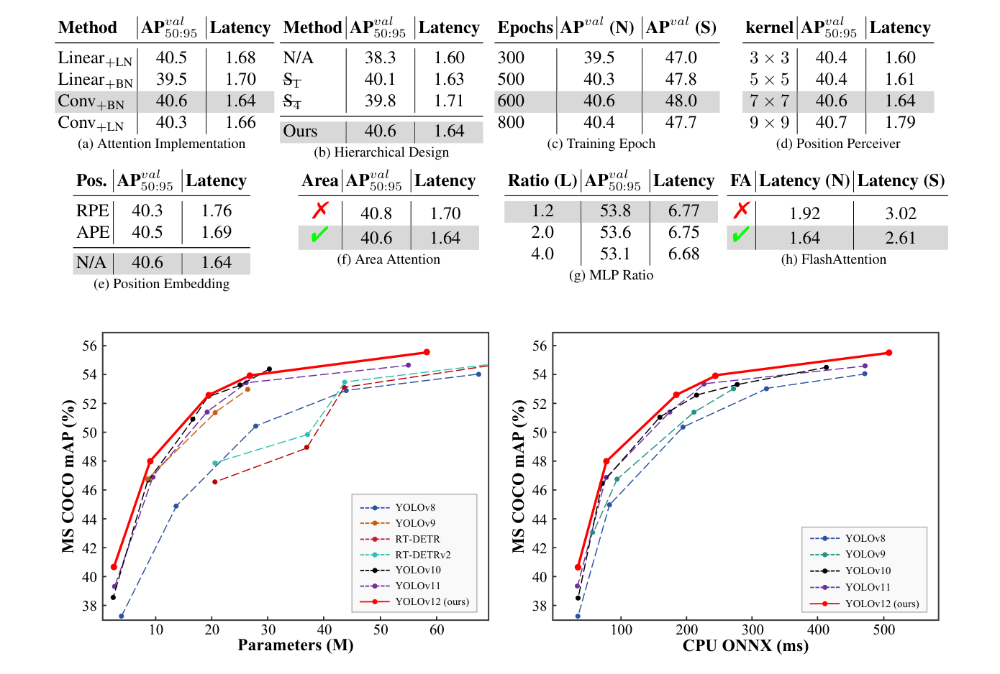
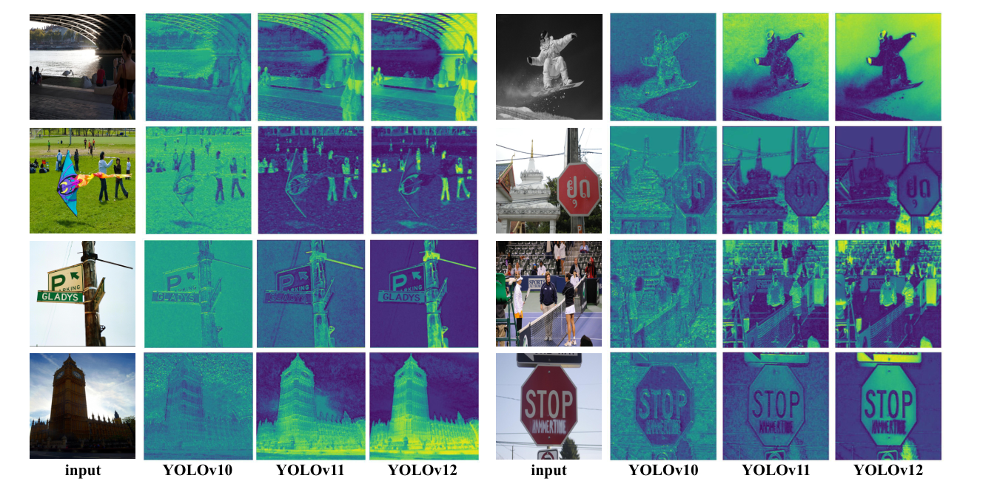

YOLOv12: 어텐션 중심의 실시간 객체 탐지기
YOLOv12: Attention-Centric Real-Time Object Detectors
기존 YOLO 시리즈는 어텐션(attention) 메커니즘의 뛰어난 모델링 성능에도 불구하고 이차 계산 복잡도($O(L^2 d)$)와 비효율적인 메모리 접근으로 인해 실시간 추론 속도를 맞추기 어려워 주로 CNN 기반 구조에 의존해 왔습니다. YOLOv12는 영역 어텐션(Area Attention, $A^2$), 잔차 효율적 계층 집계 네트워크(R-ELAN), 그리고 YOLO에 최적화된 어텐션 아키텍처 개선을 결합하여 기존 CNN 기반 YOLO 수준의 빠른 추론 속도를 유지하면서도 어텐션 중심(attention-centric) 탐지기 최초로 최고 수준의 정확도를 달성했습니다.
- 영역 어텐션 (Area Attention, $A^2$): 특징 맵을 수직 또는 수평으로 $l$개(기본값 4)의 영역으로 단순 균등 분할(
reshape연산만 사용)하여 넓은 수용 영역을 유지하면서 연산량을 대폭 줄이고 속도를 향상했습니다. - R-ELAN (Residual Efficient Layer Aggregation Networks): 블록 수준 잔차 연결과 스케일링 기법(기본 스케일링 인자 0.01) 및 병목 구조의 재설계된 특징 집계 방식을 도입하여 대규모(L/X 스케일) 어텐션 모델의 학습 불안정성과 수렴 문제를 해결했습니다.
- 주요 아키텍처 최적화: FlashAttention 적용으로 HBM 메모리 접근 병목을 해소하고, 위치 인코딩(positional encoding)을 제거하는 대신 $7 \times 7$ 분리 가능 컨볼루션(Position Perceiver)을 사용했으며, MLP 비율을 4.0에서 1.2(또는 2.0)로 조정하고
nn.Conv2d + BN을 채택했습니다. - 압도적인 성능-속도 트레이드오프: MS COCO 데이터셋 기준 YOLOv12-N은 T4 GPU(TensorRT FP16)에서 1.64 ms 지연 시간으로 40.6% mAP를 달성(YOLOv10-N 대비 +2.1%, YOLOv11-N 대비 +1.2%)했으며, YOLOv12-S는 RT-DETR-R18 / RT-DETRv2-R18보다 42% 더 빠르게 동작하면서 연산량의 36%, 파라미터의 45%만으로 더 높은 정확도(48.0% mAP)를 기록했습니다.
초록 (Abstract)
YOLO 프레임워크의 네트워크 아키텍처를 개선하는 것은 오랫동안 매우 중요한 과제였으나, 어텐션 메커니즘(attention mechanism)의 뛰어난 모델링 능력이 입증되었음에도 불구하고 그동안의 연구는 주로 CNN(Convolutional Neural Network) 기반 개선에 집중되어 왔습니다. 이는 어텐션 기반 모델이 CNN 기반 모델의 추론 속도를 따라잡지 못했기 때문입니다. 본 논문에서는 기존 CNN 기반 모델의 속도에 필적하면서도 어텐션 메커니즘의 성능적 이점을 온전히 활용하는 어텐션 중심(attention-centric) YOLO 프레임워크인 YOLOv12를 제안합니다.
YOLOv12는 경쟁력 있는 추론 속도를 유지하면서도 기존의 모든 주요 실시간 객체 탐지기(real-time object detectors)를 정확도 면에서 능가합니다. 예를 들어, YOLOv12-N은 T4 GPU에서 $1.64\text{ ms}$의 추론 지연 시간(inference latency)으로 $40.6\%\text{ mAP}$를 달성하여, 최신 모델인 YOLOv10-N 및 YOLOv11-N과 유사한 속도를 유지하면서도 각각 $2.1\%$ 및 $1.2\%\text{ mAP}$ 더 높은 성능을 보입니다. 이러한 우위는 다른 모델 스케일(scale)에서도 동일하게 유지됩니다. 또한 YOLOv12는 RT-DETR 및 RT-DETRv2와 같이 DETR을 개선한 종단간(end-to-end) 실시간 탐지기 역시 능가합니다. 구체적으로 YOLOv12-S는 RT-DETR-R18 / RT-DETRv2-R18보다 $42\%$ 더 빠르게 실행되면서도 연산량은 $36\%$, 파라미터 수는 $45\%$만 사용하여 더 높은 정확도를 달성합니다. 더 많은 비교 결과는 그림 1에 나타나 있습니다.

1. 서론 (Introduction)
실시간 객체 탐지(real-time object detection)는 낮은 지연 시간(low-latency) 특성이 제공하는 높은 실용성 덕분에 꾸준히 큰 주목을 받아 왔습니다. 그중에서도 YOLO 시리즈는 지연 시간과 정확도 사이의 최적의 균형을 효과적으로 확립하며 해당 분야를 주도해 왔습니다. YOLO의 개선 연구는 손실 함수(loss functions), 레이블 할당(label assignment) 등의 영역에서도 이루어졌으나, 네트워크 아키텍처 설계는 여전히 핵심적인 연구 우선순위로 남아 있습니다. 어텐션 중심의 비전 트랜스포머(ViT, Vision Transformer) 아키텍처가 소형 모델에서도 더 강력한 모델링 능력을 갖추고 있음이 입증되었음에도 불구하고, 대부분의 아키텍처 설계는 여전히 주로 CNN에 초점을 맞추고 있습니다.
이러한 상황의 근본적인 원인은 어텐션 메커니즘의 비효율성에 있으며, 이는 크게 두 가지 요인에서 비롯됩니다: 어텐션 메커니즘의 이차 계산 복잡도(quadratic computational complexity)와 비효율적인 메모리 접근 연산(memory access operations)(후자는 FlashAttention이 해결한 핵심 문제임)입니다. 그 결과, 유사한 연산 예산(computational budget) 하에서 CNN 기반 아키텍처가 어텐션 기반 아키텍처보다 약 $3\times$ 더 뛰어난 성능 효율을 보이며, 이는 높은 추론 속도가 필수적인 YOLO 시스템에 어텐션 메커니즘을 도입하는 데 큰 걸림돌이 되어 왔습니다.
본 논문은 이러한 난제를 해결하고 어텐션 중심의 YOLO 프레임워크인 YOLOv12를 구축하는 것을 목표로 합니다. 이를 위해 세 가지 핵심 개선 사항을 도입합니다.
- 첫째, 영역 어텐션 모듈($A^2$, Area Attention): 단순하면서도 효율적인 영역 어텐션 모듈을 제안합니다. 이는 매우 단순한 방식으로 어텐션의 계산 복잡도를 줄이면서도 넓은 수용 영역(receptive field)을 유지하여 추론 속도를 향상합니다.
- 둘째, 잔차 효율적 계층 집계 네트워크(R-ELAN, Residual Efficient Layer Aggregation Networks): 어텐션 도입으로 인해 발생하는 최적화 난제(주로 대규모 모델에서 두드러짐)를 해결하기 위해 R-ELAN을 제안합니다. R-ELAN은 기존 ELAN을 기반으로 두 가지 개선을 도입합니다: (i) 스케일링 기법을 적용한 블록 수준 잔차(residual) 설계, (ii) 재설계된 특징 집계(feature aggregation) 방식입니다.
- 셋째, YOLO 시스템에 맞춘 아키텍처 개선: 기본(vanilla) 어텐션을 넘어 YOLO 시스템에 적합하도록 여러 아키텍처 개선을 수행합니다. 구체적으로 어텐션의 메모리 접근 문제를 극복하기 위해 FlashAttention을 도입하고, 모델을 빠르고 간결하게 만들기 위해 위치 인코딩(positional encoding)과 같은 설계를 제거하며, 어텐션과 피드포워드 네트워크(FFN) 간의 연산 균형을 맞추어 성능을 높이기 위해 MLP 비율(MLP ratio)을 $4$에서 $1.2$로 조정하고, 최적화를 용이하게 하기 위해 적층 블록의 깊이를 줄이며, 연산 효율성을 극대화하기 위해 컨볼루션 연산자를 최대한 활용합니다.
위와 같은 설계를 바탕으로 N, S, M, L, X의 5가지 모델 스케일을 갖춘 새로운 실시간 탐지기 제품군을 개발했습니다. YOLOv11의 학습 설정을 그대로 따르고 어떠한 추가적인 트릭 없이 표준 객체 탐지 벤치마크에서 광범위한 실험을 수행한 결과, 그림 1에서 확인되듯 YOLOv12는 모든 스케일에 걸쳐 지연 시간-정확도 및 FLOPs-정확도 트레이드오프에서 기존 주요 모델들 대비 상당한 향상을 보여주었습니다. 예를 들어, YOLOv12-N은 $40.6\%\text{ mAP}$를 달성하여 YOLOv10-N보다 더 빠른 추론 속도를 유지하면서도 $2.1\%\text{ mAP}$ 앞서며, YOLOv11-N 대비 유사한 속도로 $1.2\%\text{ mAP}$ 더 높은 성능을 기록합니다. 이러한 이점은 다른 스케일 모델에서도 일관되게 나타납니다. RT-DETR-R18 / RT-DETRv2-R18과 비교했을 때, YOLOv12-S는 mAP에서 각각 $1.5\%$ / $0.1\%$ 더 높으면서도 추론 지연 시간은 $42\%$ 더 빠르며, 연산량의 $36\%$, 파라미터의 $45\%$만을 요구합니다.
요약하면, YOLOv12의 기여는 두 가지로 정리됩니다: 1) 방법론적 혁신과 아키텍처 개선을 통해 어텐션 중심의 단순하면서도 효율적인 YOLO 프레임워크를 정립하여 YOLO 시리즈에서 CNN 모델의 지배력을 깼습니다. 2) 사전학습(pretraining)과 같은 추가 기법에 의존하지 않고도 빠른 추론 속도와 더 높은 탐지 정확도로 최신(state-of-the-art) 성능을 달성하며 그 잠재력을 입증했습니다.
2. 관련 연구 (Related Work)
실시간 객체 탐지기 (Real-time Object Detectors)
실시간 객체 탐지기는 높은 실용적 가치 덕분에 연구 커뮤니티의 지속적인 관심을 받아 왔습니다. YOLO 시리즈는 실시간 객체 탐지의 선도적인 프레임워크로 자리매김했습니다. 초기 YOLO 시스템들은 주로 모델 설계 관점에서 프레임워크의 기틀을 마련했습니다. YOLOv4와 YOLOv5는 프레임워크에 CSPNet, 데이터 증강(data augmentation), 다중 특징 스케일을 추가했습니다. YOLOv6는 백본(backbone)과 넥(neck)을 위한 BiC 및 SimCSPSPPF 모듈과 앵커 보조 학습(anchor-aided training)을 도입하며 이를 더욱 발전시켰습니다. YOLOv7은 기울기 흐름(gradient flow) 개선을 위한 E-ELAN(efficient layer aggregation networks)과 다양한 bag-of-freebies 기법을 도입했고, YOLOv8은 향상된 특징 추출을 위해 효율적인 C2f 블록을 통합했습니다.
최근 버전에서는 YOLOv9이 아키텍처 최적화를 위한 GELAN과 학습 개선을 위한 PGI(Programmable Gradient Information)를 도입했고, YOLOv10은 효율성 향상을 위해 이중 할당(dual assignments)을 활용한 비최대 억제 없는(NMS-free, Non-Maximum Suppression-free) 학습을 적용했습니다. YOLOv11은 C3K2 모듈(GELAN의 특수 형태)과 탐지 헤드(detection head)의 경량 깊이별 분리 가능 컨볼루션(depthwise separable convolution)을 채택하여 지연 시간을 더욱 줄이고 정확도를 높였습니다. 최근에는 종단간 객체 탐지 기법인 RT-DETR이 효율적인 인코더와 불확실성 최소화 쿼리 선택(uncertainty-minimal query selection) 메커니즘을 설계하여 기존 종단간 탐지기들을 실시간 요구 사항에 맞게 개선했으며, RT-DETRv2는 여기에 bag-of-freebies를 더해 성능을 한층 강화했습니다. 기존 YOLO 시리즈와 달리, 본 연구는 어텐션 메커니즘의 우수성을 활용하기 위해 어텐션을 중심으로 하는 YOLO 프레임워크를 구축하는 데 목표를 둡니다.
효율적인 비전 트랜스포머 (Efficient Vision Transformers)
전역 셀프 어텐션(global self-attention)에서 발생하는 계산 비용을 줄이는 것은 비전 트랜스포머를 다운스트림 태스크에 효과적으로 적용하는 데 매우 중요합니다. PVT는 다중 해상도 스테이지와 특징 다운샘플링을 사용하여 이 문제를 다뤘습니다. Swin Transformer는 셀프 어텐션을 국소 윈도우(local windows)로 제한하고 비중첩 윈도우 간 연결을 위해 윈도우 분할 방식을 이동(shift)시켜 통신 필요성과 메모리 및 연산 요구량 사이의 균형을 맞추었습니다. 축 방향 셀프 어텐션(axial self-attention)과 십자형 어텐션(criss-cross attention) 등 다른 기법들은 수평 및 수직 윈도우 내에서 어텐션을 계산합니다. CSWin Transformer는 이를 발전시켜 수평 및 수직 줄무늬(stripes)를 따라 병렬로 어텐션을 계산하는 십자형 윈도우 셀프 어텐션(cross-shaped window self-attention)을 도입했습니다.
또한, 전역 셀프 어텐션에 대한 의존도를 줄여 효율성을 높이기 위해 국소-전역 관계를 구축하는 연구들도 진행되었으며, Fast-iTPN은 토큰 이동(token migration) 및 토큰 수집(token gathering) 메커니즘으로 다운스트림 태스크 추론 속도를 향상했습니다. 일부 접근 방식은 선형 어텐션(linear attention)을 사용하여 어텐션 복잡도를 낮추려 했으며, Mamba 기반 비전 모델들은 선형 복잡도를 목표로 하지만 여전히 실시간 속도에는 미치지 못합니다. 한편, FlashAttention은 비효율적인 어텐션 연산을 유발하는 고대역폭 메모리(HBM) 병목을 규명하고 I/O 최적화를 통해 메모리 접근을 줄여 계산 효율성을 높였습니다. 본 연구에서는 복잡한 설계를 과감히 버리고, 어텐션의 복잡도를 줄이기 위한 단순한 영역 어텐션(area attention) 메커니즘을 제안합니다. 이와 더불어 어텐션 메커니즘의 본질적인 메모리 접근 문제를 극복하기 위해 FlashAttention을 채택합니다.

3. 제안 방법 (Approach)
본 절에서는 어텐션 메커니즘을 결합한 네트워크 아키텍처 관점에서 YOLO 프레임워크의 혁신을 이룬 YOLOv12를 소개합니다.
3.1. 효율성 분석 (Efficiency Analysis)
어텐션 메커니즘은 자연어 처리(NLP) 및 컴퓨터 비전(CV) 등의 분야에서 전역 의존성(global dependencies)을 포착하는 데 매우 효과적이지만, 본질적으로 합성곱 신경망(CNN)보다 느립니다. 이러한 속도 차이에는 두 가지 주요 원인이 있습니다.
계산 복잡도 (Complexity). 첫째, 셀프 어텐션 연산의 계산 복잡도는 입력 시퀀스 길이 $L$에 대해 이차적으로(quadratically) 증가합니다. 구체적으로, 길이가 $L$이고 특징 차원이 $d$인 입력 시퀀스에 대해 모든 토큰이 다른 모든 토큰에 어텐션을 수행하므로 어텐션 행렬 계산에는 $O(L^2 d)$의 연산이 필요합니다. 반면, CNN의 컨볼루션 연산 복잡도는 공간 또는 시간 차원에 대해 선형적으로 증가하는 $O(k L d)$입니다(여기서 $k$는 커널 크기이며 일반적으로 $L$보다 훨씬 작음). 결과적으로 셀프 어텐션은 고해상도 이미지나 긴 시퀀스와 같이 입력 크기가 클수록 계산 비용이 기하급수적으로 커져 실시간 적용이 어려워집니다.
더 나아가 또 다른 중요한 요인은 대부분의 어텐션 기반 비전 트랜스포머가 복잡한 설계(예: Swin Transformer의 윈도우 분할 및 복원 연산)와 추가 모듈(예: 위치 인코딩)로 인해 속도 오버헤드가 점진적으로 누적되어 CNN 아키텍처 대비 전반적으로 느려진다는 점입니다. 본 논문에서는 효율성을 극대화하기 위해 단순하고 깔끔한 연산만을 사용하여 어텐션을 구현하는 모듈을 설계합니다.
연산 및 메모리 접근 (Computation). 둘째, 어텐션 계산 과정에서의 메모리 접근 패턴이 CNN에 비해 비효율적입니다. 구체적으로 셀프 어텐션 중 어텐션 맵($QK^T$)과 소프트맥스 맵($L \times L$) 같은 중간 맵들을 실제 연산이 일어나는 고속 GPU SRAM에서 고대역폭 GPU 메모리(HBM)로 저장했다가 이후 연산 시 다시 불러와야 합니다. 이때 전자의 읽기/쓰기 속도가 후자보다 10배 이상 빠르기 때문에 상당한 메모리 접근 오버헤드가 발생하고 실제 소요 시간(wall-clock time)이 증가합니다. (각주: 이 문제는 FlashAttention에 의해 해결되었으며, 본 모델 설계 시 이를 직접 채택합니다.) 또한, 어텐션의 불규칙한 메모리 접근 패턴은 고정된 수용 영역과 슬라이딩 윈도우 연산 덕분에 효율적인 메모리 캐싱과 낮은 지연 시간을 누리는 구조화되고 국소화된 메모리 접근 방식의 CNN과 비교해 추가적인 지연 시간을 유발합니다.
이차 계산 복잡도와 비효율적인 메모리 접근이라는 두 가지 요인이 결합되어, 특히 실시간 또는 자원이 제한된 환경에서 어텐션 메커니즘은 CNN보다 느리게 동작합니다. 이러한 한계를 극복하기 위해 Linformer나 Performer와 같은 희소 어텐션(sparse attention) 및 메모리 효율적 근사 기법들이 연구되어 왔습니다.

3.2. 영역 어텐션 (Area Attention)
기본 어텐션의 계산 비용을 줄이는 간단한 접근 방식 중 하나는 선형 어텐션(linear attention) 메커니즘을 사용하여 복잡도를 이차에서 선형으로 낮추는 것입니다. 차원이 $(n, h, d)$인 시각적 특징 $f$($n$은 토큰 수, $h$는 헤드 수, $d$는 헤드 크기)에 대해, 선형 어텐션은 $n > d$인 조건 하에 복잡도를 $2n^2hd$에서 $2nhd^2$로 줄여 연산 비용을 감소시킵니다. 그러나 선형 어텐션은 전역 의존성 저하(global dependency degradation), 학습 불안정성, 분포 민감성(distribution sensitivity) 문제를 겪습니다. 더욱이 저순위 병목(low-rank bottleneck)으로 인해 $640 \times 640$ 입력 해상도를 사용하는 YOLO에 적용할 경우 속도 이점이 제한적입니다.
복잡도를 효과적으로 줄이는 또 다른 대안은 그림 2에 표시된 Shift Window, Criss-Cross Attention, Axial Attention과 같은 국소 어텐션(local attention) 메커니즘입니다. 이는 전역 어텐션을 국소 어텐션으로 변환하여 계산 비용을 절감합니다. 그러나 특징 맵을 윈도우 단위로 분할하는 과정은 추가 오버헤드를 유발하거나 수용 영역을 축소시켜 속도와 정확도 모두에 악영향을 줄 수 있습니다.
본 연구에서는 단순하면서도 효율적인 영역 어텐션(Area Attention) 모듈을 제안합니다. 그림 2에서 볼 수 있듯이, 해상도가 $(H, W)$인 특징 맵을 크기가 $(\frac{H}{l}, W)$ 또는 $(H, \frac{W}{l})$인 $l$개의 세그먼트(영역)로 분할합니다. 이 방식은 명시적인 윈도우 분할(window partitioning)을 제거하고 단순한 reshape 연산만을 필요로 하므로 훨씬 빠른 속도를 달성할 수 있습니다. 경험적으로 기본값 $l = 4$로 설정하여 수용 영역을 원래의 $\frac{1}{4}$로 줄이면서도 여전히 충분히 넓은 수용 영역을 유지하도록 했습니다. 이 접근 방식을 통해 어텐션 메커니즘의 계산 비용은 $2n^2hd$에서 $\frac{1}{2}n^2hd$로 감소합니다. 복잡도가 여전히 $n^2$에 비례하지만, YOLO 시스템에서 입력 해상도가 $640$으로 고정되어 있을 때(해상도가 증가하면 $n$도 증가) 실시간 요구 사항을 충족할 만큼 충분히 효율적임을 입증했습니다. 흥미롭게도 이러한 수정은 성능에는 극히 미미한 영향만 미치면서도 추론 속도를 크게 향상시킵니다.
3.3. 잔차 효율적 계층 집계 네트워크 (Residual Efficient Layer Aggregation Networks, R-ELAN)
효율적 계층 집계 네트워크(ELAN)는 특징 집계를 개선하기 위해 설계되었습니다. 그림 3(b)에 나타난 바와 같이, ELAN은 전이 계층(transition layer, $1 \times 1$ 컨볼루션)의 출력을 분할(split)하여 한쪽 분기만 여러 모듈을 거쳐 처리한 뒤, 모든 출력을 연결(concatenation)하고 차원을 정렬하기 위해 또 다른 전이 계층($1 \times 1$ 컨볼루션)을 적용합니다. 그러나 기존 연구에서 분석되었듯이 이 구조는 불안정성을 유발할 수 있습니다. 본 연구에서는 이러한 설계가 기울기 차단(gradient blocking)을 야기하고 입력에서 출력으로 이어지는 잔차 연결(residual connection)이 부재하기 때문이라고 분석합니다. 더욱이 어텐션 메커니즘을 중심으로 네트워크를 구축하면 추가적인 최적화 난제가 발생합니다. 실제로 경험상 L 및 X 스케일 모델은 Adam이나 AdamW 옵티마이저를 사용하더라도 수렴에 실패하거나 불안정한 상태를 보였습니다.
이 문제를 해결하기 위해 그림 3(d)와 같이 잔차 효율적 계층 집계 네트워크(R-ELAN)를 제안합니다. 기존과 달리 블록 전체를 가로질러 입력에서 출력으로 이어지는 잔차 지름길(residual shortcut)을 스케일링 인자(scaling factor, 기본값 $0.01$)와 함께 도입합니다. 이 설계는 깊은 비전 트랜스포머 구축을 위해 제안된 레이어 스케일링(layer scaling)과 유사합니다. 하지만 각 영역 어텐션 모듈마다 개별적으로 레이어 스케일링을 적용하면 최적화 문제를 해결하지 못할 뿐 아니라 지연 시간 저하를 초래합니다. 이는 수렴 문제의 원인이 단지 어텐션 메커니즘의 도입뿐만 아니라 ELAN 아키텍처 자체에도 있음을 시사하며, R-ELAN 설계의 타당성을 뒷받침합니다.
또한 그림 3(d)에 도시된 바와 같이 새로운 집계 방식을 설계했습니다. 기존 ELAN 계층은 모듈 입력을 먼저 전이 계층에 통과시킨 뒤 두 부분으로 분할하고, 한 부분만 후속 블록으로 처리한 다음 마지막에 두 부분을 연결하여 출력을 생성합니다. 반면 본 설계는 전이 계층을 적용하여 채널 차원을 조정한 뒤 단일 특징 맵을 생성합니다. 이 특징 맵이 후속 블록들을 거쳐 처리된 후 연결(concatenation)되어 병목 구조(bottleneck structure)를 형성합니다. 이 방식은 기존의 특징 통합 능력을 보존할 뿐만 아니라 연산 비용과 파라미터/메모리 사용량을 모두 절감합니다.
3.4. 아키텍처 개선 (Architectural Improvements)
본 절에서는 전체 아키텍처와 기본 어텐션 메커니즘에 대한 몇 가지 개선 사항을 소개합니다(이 중 일부는 본 연구에서 최초로 제안된 것이 아님을 밝힙니다).
많은 어텐션 중심 비전 트랜스포머들이 평면형(plain-style) 아키텍처로 설계되는 반면, 본 연구는 이전 YOLO 시스템들의 계층적(hierarchical) 설계를 유지하며 그 필요성을 실험으로 입증합니다. 최근 YOLO 버전들의 백본 마지막 스테이지에 존재하던 3개의 블록을 적층하는 설계를 제거하고, 대신 단 하나의 R-ELAN 블록만을 유지하여 전체 블록 수를 줄이고 최적화에 기여하도록 했습니다. 백본의 처음 두 스테이지는 YOLOv11의 구조를 그대로 계승하며 제안된 R-ELAN을 사용하지 않습니다.
추가적으로, YOLO 시스템에 더 잘 맞도록 기본 어텐션 메커니즘의 여러 기본 설정을 수정했습니다. 이러한 수정 사항에는 다음이 포함됩니다:
- 성능 향상을 위한 연산 자원 배분 최적화를 위해 MLP 비율(MLP ratio)을 $4$에서 $1.2$(N / S / M 스케일 모델의 경우 $2$)로 조정
- 컨볼루션 연산자의 효율성을 최대한 활용하기 위해
nn.Linear + LN대신nn.Conv2d + BN채택 - 위치 인코딩(positional encoding) 제거 및 영역 어텐션이 위치 정보를 인지할 수 있도록 돕는 대형 분리 가능 컨볼루션($7 \times 7$, 즉 Position Perceiver) 도입
이러한 수정 사항들의 유효성은 4.5절에서 상세히 검증됩니다.
4. 실험 (Experiment)
본 절은 실험 설정, 주요 기법들과의 체계적인 비교, 제안 방법을 검증하기 위한 제거 연구(ablation studies), 그리고 YOLOv12를 더욱 깊이 탐구하기 위한 시각화 기반 분석의 네 부분으로 구성됩니다.
4.1. 실험 설정 (Experimental Setup)
제안하는 방법은 MSCOCO 2017 데이터셋에서 검증합니다. YOLOv12 제품군은 YOLOv12-N, YOLOv12-S, YOLOv12-M, YOLOv12-L, YOLOv12-X의 5가지 변형 모델로 구성됩니다. 모든 모델은 YOLOv11과 동일하게 초기 학습률 $0.01$의 SGD 옵티마이저를 사용하여 $600$ 에포크(epochs) 동안 학습됩니다. 선형 학습률 감쇠(linear learning rate decay) 스케줄을 채택하며, 처음 $3$ 에포크 동안 선형 웜업(linear warm-up)을 수행합니다. 선행 연구들의 방식에 따라 모든 모델의 추론 지연 시간(latency)은 TensorRT FP16 환경의 T4 GPU에서 측정합니다.
베이스라인 (Baseline). 이전 버전인 YOLOv11을 베이스라인으로 선택했습니다. 모델 스케일링 전략 또한 이와 일관되게 유지하며, YOLOv11에서 제안된 C3K2 블록(GELAN의 특수 형태) 여러 개를 사용합니다. YOLOv11 이상의 추가적인 트릭은 전혀 사용하지 않았습니다.
4.2. 최신 기법과의 비교 (Comparison with State-of-the-arts)
표 1에 YOLOv12와 다른 주요 실시간 객체 탐지기 간의 성능 비교를 제시합니다.
| 방법 (Method) | FLOPs (G) | #Param. (M) | $AP_{50:95}^{val}$ (%) | $AP_{50}^{val}$ (%) | $AP_{75}^{val}$ (%) | Latency (ms) |
|---|---|---|---|---|---|---|
| YOLOv6-3.0-N [32] | 11.4 | 4.7 | 37.0 | 52.7 | – | 2.69 |
| Gold-YOLO-N [54] | 12.1 | 5.6 | 39.6 | 55.7 | – | 2.92 |
| YOLOv8-N [24] | 8.7 | 3.2 | 37.4 | 52.6 | 40.5 | 1.77 |
| YOLOv10-N [53] | 6.7 | 2.3 | 38.5 | 53.8 | 41.7 | 1.84 |
| YOLO11-N [28] | 6.5 | 2.6 | 39.4 | 55.3 | 42.8 | 1.5 |
| YOLOv12-N (Ours) | 6.5 | 2.6 | 40.6 | 56.7 | 43.8 | 1.64 |
| YOLOv6-3.0-S [32] | 45.3 | 18.5 | 44.3 | 61.2 | – | 3.42 |
| Gold-YOLO-S [54] | 46.0 | 21.5 | 45.4 | 62.5 | – | 3.82 |
| YOLOv8-S [24] | 28.6 | 11.2 | 45.0 | 61.8 | 48.7 | 2.33 |
| RT-DETR-R18 [66] | 60.0 | 20.0 | 46.5 | 63.8 | – | 4.58 |
| RT-DETRv2-R18 [41] | 60.0 | 20.0 | 47.9 | 64.9 | – | 4.58 |
| YOLOv9-S [58] | 26.4 | 7.1 | 46.8 | 63.4 | 50.7 | – |
| YOLOv10-S [53] | 21.6 | 7.2 | 46.3 | 63.0 | 50.4 | 2.49 |
| YOLO11-S [28] | 21.5 | 9.4 | 46.9 | 63.9 | 50.6 | 2.5 |
| YOLOv12-S (Ours) | 21.4 | 9.3 | 48.0 | 65.0 | 51.8 | 2.61 |
| YOLOv6-3.0-M [32] | 85.8 | 34.9 | 49.1 | 66.1 | – | 5.63 |
| Gold-YOLO-M [54] | 87.5 | 41.3 | 49.8 | 67.0 | – | 6.38 |
| YOLOv8-M [24] | 78.9 | 25.9 | 50.3 | 67.2 | 54.7 | 5.09 |
| RT-DETR-R34 [66] | 100.0 | 36.0 | 48.9 | 66.8 | – | 6.32 |
| RT-DETRv2-R34 [41] | 100.0 | 36.0 | 49.9 | 67.5 | – | 6.32 |
| YOLOv9-M [58] | 76.3 | 20.0 | 51.4 | 68.1 | 56.1 | – |
| YOLOv10-M [53] | 59.1 | 15.4 | 51.1 | 68.1 | 55.8 | 4.74 |
| YOLO11-M [28] | 68.0 | 20.1 | 51.5 | 68.5 | 55.7 | 4.7 |
| YOLOv12-M (Ours) | 67.5 | 20.2 | 52.5 | 69.6 | 57.1 | 4.86 |
| YOLOv6-3.0-L [32] | 150.7 | 59.6 | 51.8 | 69.2 | – | 9.02 |
| Gold-YOLO-L [54] | 151.7 | 75.1 | 51.8 | 68.9 | – | 10.65 |
| YOLOv8-L [24] | 165.2 | 43.7 | 53.0 | 69.8 | 57.7 | 8.06 |
| RT-DETR-R50 [66] | 136.0 | 42.0 | 53.1 | 71.3 | – | 6.90 |
| RT-DETRv2-R50 [41] | 136.0 | 42.0 | 53.4 | 71.6 | – | 6.90 |
| YOLOv9-C [58] | 102.1 | 25.3 | 53.0 | 70.2 | 57.8 | – |
| YOLOv10-B [53] | 92.0 | 19.1 | 52.5 | 69.6 | 57.2 | 5.74 |
| YOLOv10-L [53] | 120.3 | 24.4 | 53.2 | 70.1 | 58.1 | 7.28 |
| YOLO11-L [28] | 86.9 | 25.3 | 53.3 | 70.1 | 58.2 | 6.2 |
| YOLOv12-L (Ours) | 88.9 | 26.4 | 53.7 | 70.7 | 58.5 | 6.77 |
| YOLOv8-X [24] | 257.8 | 68.2 | 54.0 | 71.0 | 58.8 | 12.83 |
| RT-DETR-R101 [66] | 259.0 | 76.0 | 54.3 | 72.7 | – | 13.5 |
| RT-DETRv2-R101 [41] | 259.0 | 76.0 | 54.3 | 72.8 | – | 13.5 |
| YOLOv10-X [53] | 160.4 | 29.5 | 54.4 | 71.3 | 59.3 | 10.70 |
| YOLO11-X [28] | 194.9 | 56.9 | 54.6 | 71.6 | 59.5 | 11.3 |
| YOLOv12-X (Ours) | 199.0 | 59.1 | 55.2 | 72.0 | 60.2 | 11.79 |
- N 스케일 모델: YOLOv12-N은 유사하거나 오히려 더 적은 연산량과 파라미터 수를 유지하면서 YOLOv6-3.0-N, YOLOv8-N, YOLOv10-N, 그리고 YOLOv11-N을 mAP 기준으로 각각 $3.6\%$, $3.3\%$, $2.1\%$, $1.2\%$ 능가하며, 이미지당 $1.64\text{ ms}$의 빠른 지연 시간을 달성합니다.
- S 스케일 모델: YOLOv12-S는 $21.4\text{G FLOPs}$와 $9.3\text{M}$ 파라미터만으로 이미지당 $2.61\text{ ms}$ 지연 시간에 $48.0\text{ mAP}$를 달성합니다. 유사하거나 더 적은 연산량을 유지하면서도 YOLOv8-S, YOLOv9-S, YOLOv10-S, YOLOv11-S를 각각 $3.0\%$, $1.2\%$, $1.7\%$, $1.1\%$ 능가합니다. 종단간 탐지기인 RT-DETR-R18 / RT-DETRv2-R18과 비교해도 YOLOv12-S는 더 뛰어난 성능을 보이면서 훨씬 빠른 추론 속도와 더 적은 연산 비용 및 파라미터 수를 기록합니다.
- M 스케일 모델: YOLOv12-M은 $67.5\text{G FLOPs}$와 $20.2\text{M}$ 파라미터로 $52.5\text{ mAP}$ 성능과 이미지당 $4.86\text{ ms}$의 속도를 달성합니다. Gold-YOLO-M, YOLOv8-M, YOLOv9-M, YOLOv10-M, YOLOv11-M 및 RT-DETR-R34 / RT-DETRv2-R34 대비 YOLOv12-M(원문 표기는 YOLOv12-S이나 문맥상 YOLOv12-M)은 뚜렷한 우위를 보입니다.
- L 스케일 모델: YOLOv12-L은 YOLOv10-L보다 $31.4\text{G}$ 더 적은 FLOPs로도 YOLOv10-L을 능가합니다. 또한 유사한 FLOPs 및 파라미터 수로 YOLOv11-L을 $0.4\%\text{ mAP}$ 차이로 앞서며, RT-DETR-R50 / RT-DETRv2-R50 대비 더 빠른 속도, $34.6\%$ 적은 FLOPs, $37.1\%$ 적은 파라미터로 더 높은 성능을 달성합니다.
- X 스케일 모델: YOLOv12-X는 유사한 속도, FLOPs, 파라미터 수를 유지하면서 YOLOv10-X / YOLOv11-X를 각각 $0.8\%$ 및 $0.6\%$ 크게 능가합니다. 또한 RT-DETR-R101 / RT-DETRv2-R101을 더 빠른 속도, $23.4\%$ 적은 FLOPs, $22.2\%$ 적은 파라미터로 다시 한 번 앞섭니다.
특히, L / X 스케일 모델을 FP32 정밀도로 평가할 경우(모델을 FP32 형식으로 별도 저장해야 함), YOLOv12는 약 $0.2\%\text{ mAP}$의 추가 향상을 얻습니다. 즉, YOLOv12-L/X는 각각 $33.9\%$ [역주: 원문 표기 기준, $53.9\%$의 오기로 추정] / $55.4\%\text{ mAP}$를 기록하게 됩니다.
4.3. 제거 연구 (Ablation Studies)
- R-ELAN: 표 2는 YOLOv12-N/L/X 모델을 사용하여 제안된 잔차 효율적 계층 집계 네트워크(R-ELAN)의 유효성을 평가합니다. 결과는 두 가지 핵심 사실을 보여줍니다: (i) YOLOv12-N과 같은 소형 모델에서는 잔차 연결이 수렴 여부에 영향을 미치지 않지만 오히려 성능을 저하시킵니다. 반면 대형 모델(YOLOv12-L/X)에서는 안정적인 학습을 위해 잔차 연결이 필수적입니다. 특히 YOLOv12-X는 수렴을 보장하기 위해 매우 작은 스케일링 인자($0.01$)가 필요합니다. (ii) 제안된 특징 통합 방식(Re-Aggre.)은 성능 하락을 미미한 수준으로 유지하면서도 FLOPs와 파라미터 측면에서 모델 복잡도를 효과적으로 감소시킵니다.
- 영역 어텐션 (Area Attention): 영역 어텐션의 유효성을 검증하기 위한 제거 실험을 수행했으며 결과는 표 3에 제시되어 있습니다. YOLOv12-N/S/X 모델을 대상으로 GPU(CUDA)와 CPU 모두에서 추론 속도를 측정했습니다. CUDA 결과는 RTX 3080 및 A5000을 사용했고, CPU 성능은 Intel Core i7-10700K @ 3.80GHz에서 측정했습니다. 결과는 영역 어텐션 적용(✓) 시 상당한 속도 향상이 이루어짐을 입증합니다. 예를 들어 RTX 3080 FP32 환경에서 YOLOv12-N은 추론 시간을 $0.7\text{ ms}$ 단축했습니다. 이러한 성능 이득은 다양한 모델과 하드웨어 구성 전반에서 일관되게 관찰됩니다. 본 실험에서는 속도 차이가 크게 줄어드는 것을 방지하기 위해 FlashAttention을 사용하지 않았습니다.
| 모델 | Vanilla | Re-Aggre. | Resi. | Scaling | Convergence | FLOPs (G) | #Param. (M) | $AP_{50:95}^{val}$ (%) |
|---|---|---|---|---|---|---|---|---|
| YOLOv12-N | ✓ | ✗ | ✗ | – | ✓ | 6.9 | 2.7 | 40.8 |
| ✗ | ✓ | ✗ | – | ✓ | 6.5 | 2.6 | 40.6 | |
| ✗ | ✗ | ✓ | 0.1 | ✓ | 6.5 | 2.6 | 40.3 | |
| YOLOv12-L | ✓ | ✗ | ✗ | – | ✗ | – | – | – |
| ✗ | ✓ | ✗ | – | ✗ | – | – | – | |
| ✗ | ✓ | ✓ | 0.1 | ✓ | 88.9 | 26.4 | 53.3 | |
| ✗ | ✓ | ✓ | 0.01 | ✓ | 88.9 | 26.4 | 53.7 | |
| ✗ | ✗ | ✓ | 0.01 | ✓ | 94.3 | 27.8 | 53.8 | |
| YOLOv12-X | ✓ | ✗ | ✗ | – | ✗ | – | – | – |
| ✗ | ✓ | ✗ | – | ✗ | – | – | – | |
| ✗ | ✓ | ✓ | 0.1 | ✗ | – | – | – | |
| ✗ | ✓ | ✓ | 0.01 | ✓ | 199.0 | 59.1 | 55.2 | |
| ✗ | ✗ | ✓ | 0.01 | ✓ | 211.3 | 62.3 | 55.3 | |
| 모델 | Area Attention | CUDA FP32 (3080/A5000) | CUDA FP16 (3080/A5000) | CPU (ms) |
|---|---|---|---|---|
| YOLOv12-N | ✗ | 2.7 / 2.5 | 1.5 / 1.5 | 62.9 |
| ✓ | 2.0 / 2.0 | 1.3 / 1.3 | 31.4 | |
| YOLOv12-S | ✗ | 5.1 / 4.4 | 2.5 / 2.2 | 130.0 |
| ✓ | 3.5 / 3.1 | 1.7 / 1.7 | 78.4 | |
| YOLOv12-X | ✗ | 26.4 / 21.9 | 11.1 / 10.4 | 804.2 |
| ✓ | 18.2 / 14.3 | 7.1 / 6.7 | 512.5 |
4.4. 속도 비교 (Speed Comparison)
표 4는 서로 다른 GPU(RTX 3080, RTX A5000, RTX A6000) 환경에서 FP32 및 FP16 정밀도로 YOLOv9, YOLOv10, YOLOv11, 그리고 본 논문의 YOLOv12의 추론 속도를 비교 분석한 결과를 보여줍니다. 일관성을 보장하기 위해 모든 결과는 동일한 하드웨어에서 측정되었으며, YOLOv9과 YOLOv10은 ultralytics 통합 코드베이스를 사용하여 평가되었습니다. 결과에 따르면 YOLOv12는 YOLOv9보다 훨씬 빠른 추론 속도를 달성하면서도 YOLOv10 및 YOLOv11과 대등한 수준을 유지합니다. 예를 들어 RTX 3080에서 YOLOv9-T는 $2.4\text{ ms}$(FP32) 및 $1.5\text{ ms}$(FP16)를 기록한 반면, YOLOv12-N은 $1.7\text{ ms}$(FP32) 및 $1.1\text{ ms}$(FP16)를 달성합니다. 이와 유사한 경향이 다른 모델 구성에서도 일관되게 나타납니다.
| 모델 | 스케일 | FLOPs (G) | RTX 3080 (FP32/FP16) | A5000 (FP32/FP16) | A6000 (FP32/FP16) |
|---|---|---|---|---|---|
| YOLOv9 [58] | T | 8.2 | 2.4 / 1.5 | 2.4 / 1.6 | 2.3 / 1.7 |
| S | 26.4 | 3.7 / 1.9 | 3.4 / 2.0 | 3.5 / 1.9 | |
| M | 76.3 | 6.5 / 2.8 | 5.5 / 2.6 | 5.2 / 2.6 | |
| C | 102.1 | 8.0 / 2.9 | 6.4 / 2.7 | 6.0 / 2.7 | |
| E | 189.0 | 17.2 / 6.7 | 14.2 / 6.3 | 13.1 / 5.9 | |
| YOLOv10 [53] | N | 6.7 | 1.6 / 1.0 | 1.6 / 1.0 | 1.6 / 1.0 |
| S | 21.6 | 2.8 / 1.4 | 2.4 / 1.4 | 2.4 / 1.3 | |
| M | 59.1 | 5.7 / 2.5 | 4.5 / 2.4 | 4.2 / 2.2 | |
| B | 92.0 | 6.8 / 2.9 | 5.5 / 2.6 | 5.2 / 2.8 | |
| YOLOv11 [28] | N | 6.5 | 1.6 / 1.0 | 1.6 / 1.0 | 1.5 / 0.9 |
| S | 21.5 | 2.8 / 1.3 | 2.4 / 1.4 | 2.4 / 1.3 | |
| M | 68.0 | 5.6 / 2.3 | 4.5 / 2.2 | 4.4 / 2.1 | |
| L | 86.9 | 7.4 / 3.0 | 5.9 / 2.7 | 5.8 / 2.7 | |
| X | 194.9 | 15.2 / 5.3 | 10.7 / 4.7 | 9.1 / 4.0 | |
| YOLOv12 (Ours) | N | 6.5 | 1.7 / 1.1 | 1.7 / 1.0 | 1.7 / 1.1 |
| S | 21.4 | 2.9 / 1.5 | 2.5 / 1.5 | 2.5 / 1.4 | |
| M | 67.5 | 5.8 / 1.5 | 4.6 / 2.4 | 4.4 / 2.2 | |
| L | 88.9 | 7.9 / 3.3 | 6.2 / 3.1 | 6.0 / 3.0 | |
| X | 199.0 | 15.6 / 5.6 | 11.0 / 5.2 | 9.5 / 4.4 | |
그림 4는 추가적인 비교 결과를 제시합니다. 왼쪽 서브 그림은 주요 기법들과의 정확도-파라미터 수 트레이드오프를 보여주며, YOLOv12는 파라미터 수가 현저히 적은 것으로 알려진 YOLOv10조차 능가하면서 경쟁 기법들을 넘어서는 지배적인 경계선(dominant boundary)을 형성하여 YOLOv12의 효율성을 입증합니다. 오른쪽 서브 그림에서는 CPU 환경(모든 결과는 Intel Core i7-10700K @ 3.80GHz에서 측정)에서 이전 YOLO 버전들과 YOLOv12의 추론 지연 시간을 비교합니다. 그래프에서 보이듯 YOLOv12는 더 유리한 경계선으로 다른 경쟁 모델들을 능가하며 다양한 하드웨어 플랫폼 전반에 걸친 뛰어난 효율성을 보여줍니다.

4.5. 진단 분석 및 시각화 (Diagnosis & Visualization)
표 5a부터 5h까지에서 YOLOv12의 설계 요소들을 진단 분석합니다. 별도의 명시가 없는 한, 이 진단 실험들은 YOLOv12-N 모델을 사용하여 처음부터(from scratch) $600$ 에포크 동안 학습하는 것을 기본 설정으로 수행합니다.
| (a) 어텐션 구현 방식 (Attention Implementation) | (b) 계층적 설계 (Hierarchical Design) | (c) 학습 에포크 (Training Epoch) | (d) Position Perceiver | ||||||||
|---|---|---|---|---|---|---|---|---|---|---|---|
| 방법 | $AP_{50:95}^{val}$ | Latency | 방법 | $AP_{50:95}^{val}$ | Latency | Epochs | $AP^{val}$ (N) | $AP^{val}$ (S) | 커널 | $AP_{50:95}^{val}$ | Latency |
| Linear+LN | 40.5 | 1.68 | N/A | 38.3 | 1.60 | 300 | 39.5 | 47.0 | $3 \times 3$ | 40.4 | 1.60 |
| Linear+BN | 39.5 | 1.70 | S1 | 40.1 | 1.63 | 500 | 40.3 | 47.8 | $5 \times 5$ | 40.4 | 1.61 |
| Conv+BN | 40.6 | 1.64 | S4 | 39.8 | 1.71 | 600 | 40.6 | 48.0 | $7 \times 7$ | 40.6 | 1.64 |
| Conv+LN | 40.3 | 1.66 | Ours | 40.6 | 1.64 | 800 | 40.4 | 47.7 | $9 \times 9$ | 40.7 | 1.79 |
| (e) 위치 임베딩 (Position Embedding) | (f) 영역 어텐션 (Area Attention) | (g) MLP 비율 (MLP Ratio, L 스케일) | (h) FlashAttention | ||||||||
| Pos. | $AP_{50:95}^{val}$ | Latency | Area | $AP_{50:95}^{val}$ | Latency | Ratio (L) | $AP_{50:95}^{val}$ | Latency | FA | Latency (N) | Latency (S) |
| RPE | 40.3 | 1.76 | ✗ | 40.8 | 1.70 | 1.2 | 53.8 | 6.77 | ✗ | 1.92 | 3.02 |
| APE | 40.5 | 1.69 | ✓ | 40.6 | 1.64 | 2.0 | 53.6 | 6.75 | ✓ | 1.64 | 2.61 |
| N/A | 40.6 | 1.64 | 4.0 | 53.1 | 6.68 | ||||||
- 어텐션 구현 방식 (표 5a): 어텐션을 구현하는 두 가지 접근 방식을 검토했습니다. 컨볼루션 기반 방식은 컨볼루션의 연산 효율성 덕분에 선형(linear) 기반 방식보다 빠릅니다. 또한 두 가지 정규화 기법(층 정규화(LN, Layer Normalization) 및 배치 정규화(BN, Batch Normalization))을 비교한 결과, 어텐션 메커니즘에서 일반적으로 LN이 널리 사용됨에도 불구하고 컨볼루션과 함께 사용할 때는 BN보다 성능이 떨어짐을 발견했습니다. 특히 이 설계는 이미 PSA 모듈에서도 사용된 바 있으며, 본 연구의 결과는 해당 설계와 일치합니다.
- 계층적 설계 (표 5b): Mask R-CNN과 같이 평면형 비전 트랜스포머 아키텍처가 강력한 성능을 내는 다른 탐지 시스템과 달리, YOLOv12는 다른 양상을 보입니다. 평면형 비전 트랜스포머(N/A)를 사용할 경우 탐지기 성능이 급격히 하락하여 $38.3\%\text{ mAP}$에 그칩니다. 특징 차원을 조정해 유사한 FLOPs를 유지하면서 첫 번째 스테이지(S1)나 네 번째 스테이지(S4)를 생략하는 보다 완만한 조정을 하더라도 각각 $0.5\%\text{ mAP}$ 및 $0.8\%\text{ mAP}$의 소폭 성능 저하가 발생합니다. 기존 YOLO 모델들과 마찬가지로 계층적 설계가 여전히 가장 효과적이며 YOLOv12에서 최고 성능을 끌어냅니다.
- 학습 에포크 (표 5c): 학습 에포크 수 변화가 성능에 미치는 영향(처음부터 학습)을 조사했습니다. 기존 일부 YOLO 탐지기들이 약 $500$ 에포크 학습 후 최적의 결과를 달성하는 반면, YOLOv12는 최고 성능에 도달하기 위해 더 긴 학습 기간(약 $600$ 에포크)을 필요로 하며, 이는 YOLOv11에서 사용된 설정과 동일합니다.
- Position Perceiver (표 5d): 어텐션 메커니즘에서 어텐션 값 $v$에 큰 커널의 분리 가능 컨볼루션을 적용하고 그 출력을
v@attn에 더합니다. 컨볼루션의 평활화(smoothing) 효과가 이미지 픽셀의 원래 위치 정보를 보존하여 어텐션 메커니즘이 위치 정보를 인지하도록 돕기 때문에 이 구성 요소를 Position Perceiver라고 명명했습니다(이는 PSA 모듈에서도 이미 사용되었으나, 본 연구에서는 속도에 영향을 주지 않으면서 성능을 향상하기 위해 컨볼루션 커널 크기를 확장함). 표에서 확인되듯 컨볼루션 커널 크기를 키우면 성능은 향상되지만 점차 속도가 느려집니다. 커널 크기가 $9 \times 9$에 도달하면 속도 저하가 두드러지므로, 기본 커널 크기로 $7 \times 7$을 설정했습니다. - 위치 임베딩 (표 5e): 대부분의 어텐션 기반 모델에서 흔히 사용되는 위치 임베딩(RPE: 상대 위치 임베딩, APE: 절대 위치 인코딩)이 성능에 미치는 영향을 검증했습니다. 흥미롭게도 어떠한 위치 임베딩도 사용하지 않았을 때 최고 성능이 달성되었으며, 이는 더 간결한 아키텍처와 더 빠른 추론 지연 시간을 제공합니다.
- 영역 어텐션 (표 5f): 이 표에서는 기본적으로 FlashAttention 기법을 사용합니다. 이로 인해 영역 어텐션 메커니즘이 연산 효율을 높이는 과정에서 발생하는 성능 변화와 속도 차이가 매우 작게 나타납니다. 영역 어텐션의 효과에 대한 추가 검증은 표 3을 참조하시기 바랍니다.
- MLP 비율 (표 5g): 전통적인 비전 트랜스포머에서는 어텐션 모듈 내부의 MLP 비율을 일반적으로 $4.0$으로 설정합니다. 그러나 YOLOv12에서는 다른 양상이 관찰됩니다. 표에서 MLP 비율 변경은 모델 크기에 영향을 미치므로 전체 모델 일관성을 유지하기 위해 특징 차원을 함께 조정했습니다. 특히 YOLOv12는 기존 관행과 달리 MLP 비율 $1.2$에서 더 나은 성능을 달성했습니다. 이러한 조정은 연산 부하를 어텐션 메커니즘 쪽으로 더 집중시키며 영역 어텐션의 중요성을 부각합니다.
- FlashAttention (표 5h): 이 표는 YOLOv12에서 FlashAttention의 역할을 검증합니다. FlashAttention은 별도의 비용 없이 YOLOv12-N의 속도를 약 $0.3\text{ ms}$, YOLOv12-S의 속도를 약 $0.4\text{ ms}$ 가속화함을 보여줍니다.

시각화: 히트맵 비교 (Visualization: Heat Map Comparison). 그림 5는 YOLOv12의 히트맵을 최신 YOLOv10 및 YOLOv11과 비교합니다. X 스케일 모델 백본의 세 번째 스테이지에서 추출된 이 히트맵들은 모델에 의해 활성화된 영역을 강조하여 객체 인지 능력을 반영합니다. 그림에서 볼 수 있듯이, YOLOv10 및 YOLOv11에 비해 YOLOv12는 더 선명한 객체 윤곽과 더 정밀한 전경(foreground) 활성화를 생성하며 향상된 인지 능력을 보여줍니다. 이에 대한 본 연구의 설명은 이러한 개선이 컨볼루션 네트워크보다 넓은 수용 영역을 가진 영역 어텐션 메커니즘에서 비롯된다는 것입니다. 넓은 수용 영역 덕분에 전체적인 문맥(context)을 더 잘 포착하여 더욱 정밀한 전경 활성화로 이어지며, 이러한 특성이 YOLOv12에 성능적 우위를 부여한다고 판단됩니다.
| 모델 | $AP_{50:95}^{val}$ (%) | $AP_{50}^{val}$ (%) | $AP_{75}^{val}$ (%) | $AP_{small}^{val}$ (%) | $AP_{medium}^{val}$ (%) | $AP_{large}^{val}$ (%) |
|---|---|---|---|---|---|---|
| YOLOv12-N | 40.6 | 56.7 | 43.8 | 20.2 | 45.2 | 58.4 |
| YOLOv12-S | 48.0 | 65.0 | 51.8 | 29.8 | 53.2 | 65.6 |
| YOLOv12-M | 52.5 | 69.6 | 57.1 | 35.7 | 58.2 | 68.8 |
| YOLOv12-L | 53.7 | 70.7 | 58.5 | 36.9 | 59.5 | 69.9 |
| YOLOv12-X | 55.2 | 72.0 | 60.2 | 39.6 | 60.7 | 70.9 |
5. 결론 (Conclusion)
본 연구는 전통적으로 실시간 요구 사항에 비효율적이라고 여겨졌던 어텐션 중심 설계를 YOLO 프레임워크에 성공적으로 도입하여 최신(state-of-the-art) 지연 시간-정확도 트레이드오프를 달성한 YOLOv12를 제안합니다. 효율적인 추론을 가능하게 하기 위해, 계산 복잡도를 낮추는 영역 어텐션(area attention)과 특징 집계를 강화하는 잔차 효율적 계층 집계 네트워크(R-ELAN)를 활용하는 새로운 네트워크를 제안했습니다. 나아가 높은 속도를 유지하면서도 YOLO의 실시간 제약 조건에 더 잘 부합하도록 기본 어텐션 메커니즘의 핵심 구성 요소들을 정교하게 개선했습니다. 그 결과, YOLOv12는 영역 어텐션, R-ELAN, 그리고 아키텍처 최적화를 효과적으로 결합하여 정확도와 효율성 모두에서 괄목할 만한 향상을 이루며 최신 성능을 달성했습니다. 포괄적인 제거 연구는 이러한 혁신 요소들의 유효성을 추가로 입증합니다. 본 연구는 YOLO 시스템에서 CNN 기반 설계의 지배력에 도전하고 실시간 객체 탐지를 위한 어텐션 메커니즘의 통합을 진전시켜, 더욱 효율적이고 강력한 YOLO 시스템을 위한 길을 열었습니다.
6. 한계점 (Limitations)
YOLOv12는 FlashAttention을 필요로 하며, FlashAttention은 현재 Turing, Ampere, Ada Lovelace 또는 Hopper 아키텍처 기반 GPU(예: T4, Quadro RTX 시리즈, RTX20 시리즈, RTX30 시리즈, RTX40 시리즈, RTX A5000/6000, A30/40, A100, H100 등)를 지원합니다.
7. 세부 사항 (More Details)
파인튜닝 세부 사항 (Fine-tuning Details). 기본적으로 모든 YOLOv12 모델은 SGD 옵티마이저를 사용하여 $600$ 에포크 동안 학습됩니다. 선행 연구들에 따라 SGD 모멘텀(momentum)과 가중치 감쇠(weight decay)는 각각 $0.937$ 및 $5 \times 10^{-4}$로 설정됩니다. 초기 학습률은 $1 \times 10^{-2}$로 설정되며 학습 과정 전반에 걸쳐 $1 \times 10^{-4}$까지 선형적으로 감쇠합니다. 학습을 강화하기 위해 Mosaic, Mixup 및 copy-paste 증강을 포함한 데이터 증강 기법이 적용되며, YOLOv11을 따라 Albumentations 라이브러리를 채택합니다. 상세한 하이퍼파라미터는 표 7에 정리되어 있습니다. 모든 모델은 $8\times$ NVIDIA A6000 GPU에서 학습되었습니다. 확립된 관례에 따라 다양한 객체 스케일 및 IoU 임계값에 대한 표준 평균 정밀도(mAP)를 보고하며, 모든 이미지에 대한 평균 지연 시간도 함께 보고합니다. 더 자세한 내용은 공식 코드 저장소(https://github.com/sunsmarterjie/yolov12)를 참조하시기 바랍니다.
상세 결과 (Result Details). 표 6에 $AP_{50:95}^{val}$, $AP_{50}^{val}$, $AP_{75}^{val}$, $AP_{small}^{val}$, $AP_{medium}^{val}$, $AP_{large}^{val}$를 포함한 더 자세한 평가 결과를 보고합니다.
| 하이퍼파라미터 (Hyperparameters) | YOLOv12-N / S / M / L / X |
|---|---|
| 학습 설정 (Training Configuration) | |
| 에포크 (Epochs) | 600 |
| 옵티마이저 (Optimizer) | SGD |
| 모멘텀 (Momentum) | 0.937 |
| 배치 크기 (Batch size) | $32 \times 8$ |
| 가중치 감쇠 (Weight decay) | $5 \times 10^{-4}$ |
| 웜업 에포크 (Warm-up epochs) | 3 |
| 웜업 모멘텀 (Warm-up momentum) | 0.8 |
| 웜업 편향 학습률 (Warm-up bias learning rate) | 0.0 |
| 초기 학습률 (Initial learning rate) | $10^{-2}$ |
| 최종 학습률 (Final learning rate) | $10^{-4}$ |
| 학습률 스케줄 (Learning rate schedule) | 선형 감쇠 (Linear decay) |
| 손실 함수 파라미터 (Loss Parameters) | |
| 박스 손실 가중치 (Box loss gain) | 7.5 |
| 클래스 손실 가중치 (Class loss gain) | 0.5 |
| DFL 손실 가중치 (DFL loss gain) | 1.5 |
| 데이터 증강 파라미터 (Augmentation Parameters) | |
| HSV 채도 증강 (HSV saturation augmentation) | 0.7 |
| HSV 명도 증강 (HSV value augmentation) | 0.4 |
| HSV 색상 증강 (HSV hue augmentation) | 0.015 |
| 평행 이동 증강 (Translation augmentation) | 0.1 |
| 스케일 증강 (Scale augmentation) | 0.5 / 0.9 / 0.9 / 0.9 / 0.9 |
| Mosaic 증강 (Mosaic augmentation) | 1.0 |
| Mixup 증강 (Mixup augmentation) | 0.0 / 0.05 / 0.15 / 0.15 / 0.2 |
| Copy-paste 증강 (Copy-paste augmentation) | 0.1 / 0.15 / 0.4 / 0.5 / 0.6 |
| Mosaic 종료 에포크 (Close mosaic epochs) | 10 |
참고 문헌 (References)
원문에는 총 71편의 참고 문헌이 수록되어 있으며, 주요 핵심 문헌은 다음과 같습니다.
- [3, 24, 28, 29, 32, 45–47, 53, 54, 57, 58] YOLO 시리즈 및 실시간 탐지기: YOLOv1–v3 (Redmon et al., 2016–2018), YOLOv4 (Bochkovskiy et al., 2020), YOLOv5 & YOLOv8 & YOLOv11 (Ultralytics, 2020–2024), YOLOv6 v3.0 (Li et al., 2023), YOLOv7 (Wang et al., 2023), Gold-YOLO (Wang et al., 2024), YOLOv9 (Wang et al., 2024), YOLOv10 (Wang et al., 2024).
- [7, 40, 41, 66] DETR 및 실시간 종단간 탐지기: DETR (Carion et al., 2020), RT-DETR (Zhao et al., 2024), RT-DETRv2 (Lv et al., 2024).
- [13, 14] 메모리 효율적 어텐션: FlashAttention (Dao et al., 2022) 및 FlashAttention-2 (Dao, 2023).
- [16, 26, 27, 38, 39, 49, 60, 61] 효율적 비전 트랜스포머 및 백본: PVT (Wang et al., 2021), Swin Transformer (Liu et al., 2021), Axial Attention (Ho et al., 2019), CCNet / Criss-Cross Attention (Huang et al., 2019), CSWin Transformer (Dong et al., 2022), Linformer (Wang et al., 2020), Efficient Attention (Shen et al., 2021), VMamba (Liu et al., 2024).
- [36, 52, 55, 56] 기반 아키텍처 및 데이터셋: MS COCO (Lin et al., 2014), LayerScale / CaiT (Touvron et al., 2021), CSPNet (Wang et al., 2020), ELAN (Wang et al., 2022).